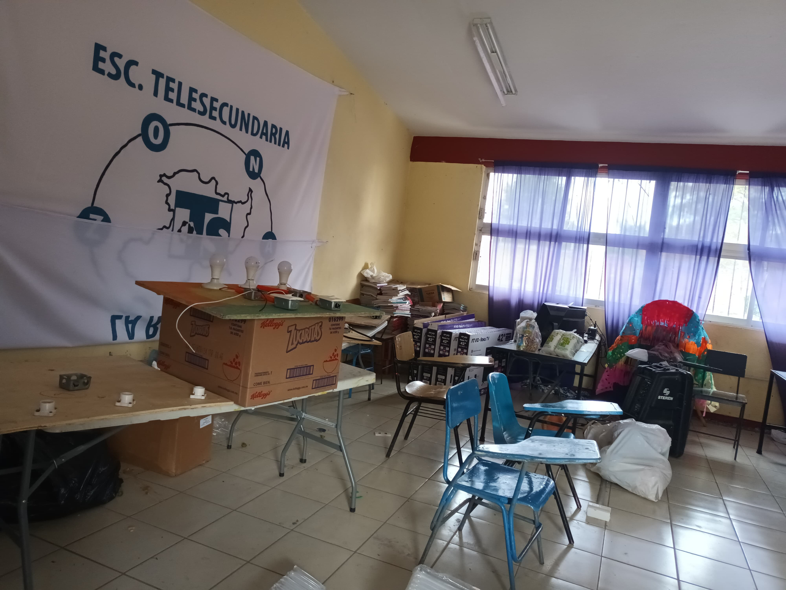
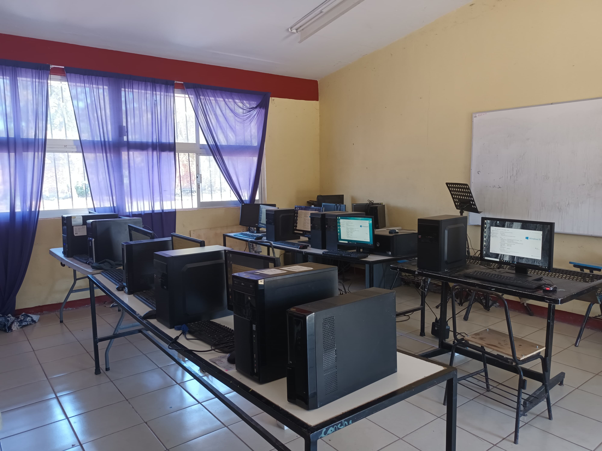
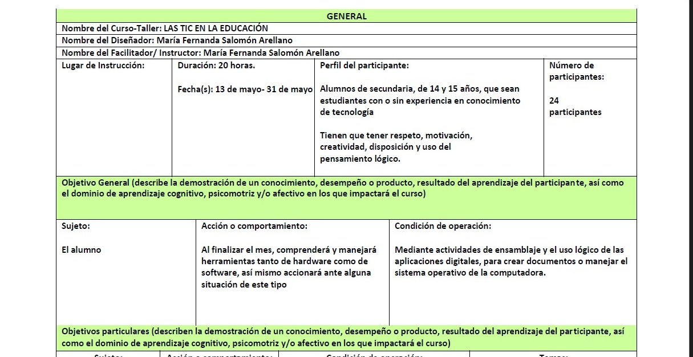
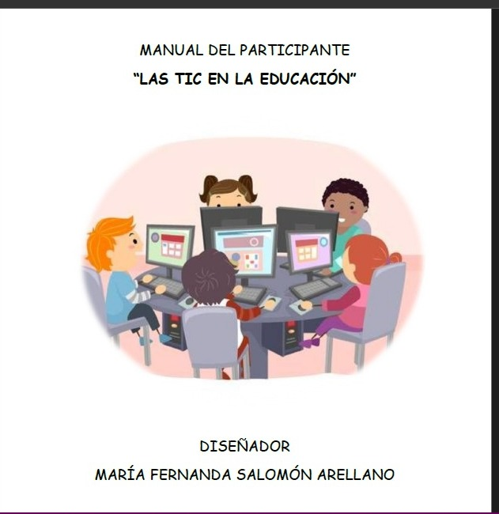
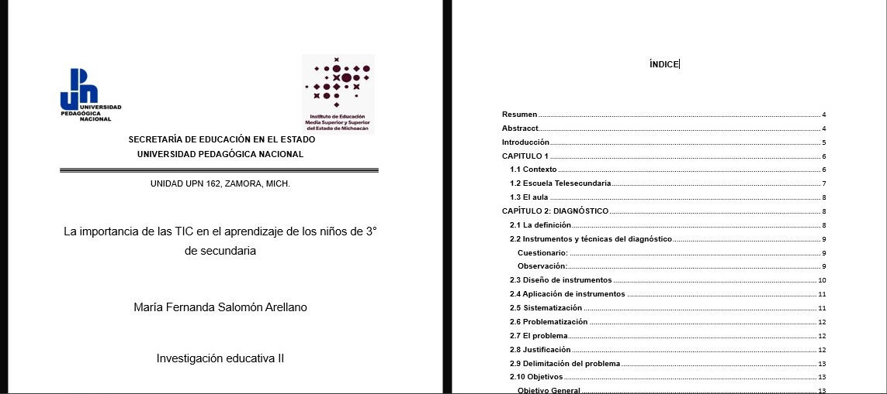
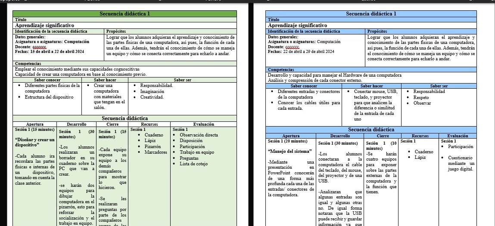

"Adaptación del salón de computación"
Antes

Después
Septiembre 2023- junio 2024/ escuela telesecundaria, La Rinconada, Zamora, Mich.
Adaptación del salón de cómputo desde cero en la escuela telesecundaria de la comunidad de La Rinconada, Zamora, Michoacán . Con el objetivo de que los alumnos aprendan lo básico de una computadora. Puesto que el lugar es un ranchito el cual los temas de tecnología y computación son muy poco común. Así mismo, otro de los objetivos principales de este proyecto fue motivar a todos los alumnos a aprender a manejar una PC y que cuando egresen tengan un conocimiento sobre esto, para que dicho conocimiento lo apliquen en su ámbito académico o laboral.
"Elaboración de un manual del participante"
Carta descriptiva del curso-taller

Manual con actividades para aplicar a los participantes
Mayo 2024/ escuela telesecundaria, La Rinconada, Zamora, Mich.
Se realizó un curso-taller para un grupo de 24 participantes. Para ello, se elaboró el objetivo general y objetivos particulares, esto a partir de la taxonomía de Bloom. Así mismo, se realizaron evaluaciones para cada objetivo particular y la carta descriptiva, referente a esos datos se elaboró el manual, el cual cuenta con distintas actividades que se aplicaron a los alumnos, dichas actividades estan igualmente relacionadas a los objetivos, puesto que se tiene que lograr lo que se propone en cada uno de estos.La duración de dicho curso fue de 20 horas.
"Proyecto de investigación-acción"
Portada oficial e índice de contenido de la investigación

secuencias de planeaciones, con actividades referentes al problema detectado en la investigación.
Agosto 2023- Mayo 2024/ escuela telesecundaria, La Rinconada, Zamora, Mich.
El punto de partida de esta investigación acción fue la observación en el grupo de tercer grado de secundaria, posterior a ello se realizaron un par de cuestionarios para detectar el problema a investigar. para intervenir en dicho problema, se elaboraron dos secuencias didacticas, cada una con distintas planeaciones, dentro de las planeaciones hay actividad para actuar ante la problematica. Después de aplicar las planeaciones se reflexionó sobre sí realmente hubo resultados o no. la respuesta a esto, fue un sí, realmente hubo muy buenos resultados y se cumplio con el objetivo. El teórico principal de esta investigación es Vygotski, dado que esta enfocada en el paradigama constructivista.